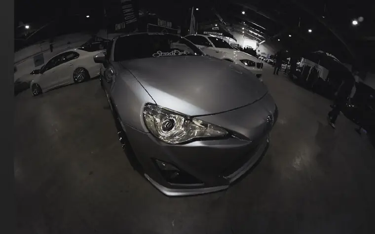

YFC Autofest 2026
Indoor coverage of YFC Autofest 2026, shot on a fisheye from knee height to stretch the hall.
See the set
- Category
- Events & shows
- Posted
- June 2026
- Location
- YFC Autofest
- Photographs
- 9
- Original post
- View on Instagram



Your car. The next feature.
Send the car, your preferred date, and the location to @ln._photos.